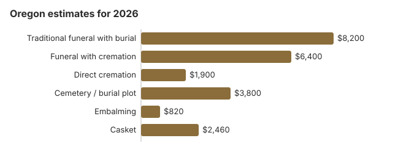

Funeral Costs in Oregon: What Families Pay in 2026
Our 2026 estimate for a traditional Oregon funeral with burial is about $8,200, close to the $8,300 national median, while a service with cremation runs near $6,400 and direct cremation starts around $1,900. Oregon cremates more than almost any state, 78% of deaths, so most families here are pricing a cremation rather than a grave. Below are the item prices, the $25 Oregon death certificate and how to order it, the state program that pays for an unclaimed burial, and the Oregon rules that set the timetable.
Oregon Funeral Costs, Item by Item
Here are our Oregon item estimates. The Mortuary and Cemetery Board licenses Oregon homes but leaves each one to set its own prices.
| Item | Typical | Low to high |
|---|---|---|
| Traditional funeral with burial | $8,200 | $6,150 – $10,660 |
| Funeral with cremation | $6,400 | $5,120 – $8,320 |
| Direct cremation | $1,900 | $1,330 – $2,660 |
| Cemetery / burial plot | $3,800 | $1,900 – $7,600 |
| Embalming | $820 | $500 – $1,500 |
| Casket | $2,460 | $820 – $6,560 |
How we got these Oregon numbers: they come out of our state cost model, not a phone survey of Oregon funeral homes, and none of them is a quote or professional advice. Read how the model works and our disclaimer.
State sources: ORS 97.170; Oregon Indigent Disposition Program guide; ORS 97.130.

Oregon Charges to Ask About
An Oregon quote can leave things out, so ask about these lines before you sign.
- Embalming listed as mandatory: Oregon lets refrigeration stand in for it, so ask the home to name the rule.
Why Oregon Prices Differ
Western states tend to run above the $8,300 US median, and inside Oregon a Portland home will often quote 10-30% more than one in a smaller town.
Oregon's Alternatives to a Conventional Funeral
Oregon families use alternatives to a conventional funeral more than most: green burial, alkaline hydrolysis, direct cremation and body donation are all common here. That leaves real choices under the $8,200 traditional price, and our green burial and direct cremation guides both apply in Oregon.
Paying for an Oregon Funeral
- The Indigent Disposition Program pays the Oregon funeral establishment, now $550 per approved claim, and pays nothing to the family (ORS 97.170).
- Social Security's one-time $255 goes to an Oregon widow, widower or qualifying child who calls 1-800-772-1213 within two years.
- The person who paid an Oregon veteran's funeral files VA Form 21P-530EZ; for a death that was not service-connected and fell on or after October 1, 2026, the most VA pays is $1,032 toward burial plus another $1,032 toward the plot (our veteran burial benefits guide has the rules).
- Oregon families short on cash can also look at Medicaid and charity help in our funeral payment assistance guide, or read how to pay for a funeral with no money for every route we know of.
Educational Resources
- Funeral Consumers AllianceIndependent nonprofit consumer advocacy for funeral rights
- FTC Funeral RuleThe federal rule protecting funeral consumers
- Funeral Insurance GuideCompare final expense and burial insurance options
- Best Burial Insurance CompaniesSide-by-side comparison of top burial insurance providers
- Payment Assistance GuideGovernment programs and financial help for funeral costs
- Insurance Plan ComparisonCompare coverage, premiums, and payout speed across providers
Compare Funeral Costs
- Average Funeral Cost in 2026National cost breakdown with real prices
- Cremation vs. Burial Cost ComparisonSide-by-side price comparison to help you decide
- Funeral Cost BreakdownEvery line item explained: know what you're paying for
- Cheapest Funeral OptionsLower-cost alternatives, with typical price ranges
- Direct Cremation: Most Affordable OptionNFDA 2023 median $2,645 with a family-supplied container (latest available)
- How to Compare Funeral PricesStep-by-step guide to getting the best price
Oregon Cremation and Burial Pages
Each choice has its own Oregon page:
Cremation Costs in Oregon
Nearly eight in ten Oregon deaths (78%) end in cremation. Direct cremation starts near $1,900 and cremation with a service near $6,400; the page also covers urns and scattering.
Burial Costs in Oregon
A plot near $3,800 plus casket, vault, marker and opening brings an Oregon burial to $18,380-$22,880.
Oregon: Cremation or a Grave?
Cremation
- Direct cremation near $1,900
- With a service, near $6,400
- No plot to buy
- Memorial timing is up to you
- 78% of Oregon deaths
Traditional Burial
- Funeral near $8,200
- Plot near $3,800
- Most cemeteries want a vault or liner
- A grave to visit
- A metal casket sells for around $2,500 nationally (NFDA 2023 General Price List Study); Oregon sellers vary
Portland and Other Oregon Cities
Portland homes usually charge more than those in smaller Oregon cities; our city estimates:
Oregon Buyers and the Funeral Rule
A Funeral Rule complaint goes to the FTC at ftc.gov, and the Funeral Consumers Alliance gives Oregon families free advice.
Oregon's Cheapest Choices
| Choice | Approx. | What you get |
|---|---|---|
| Direct cremation | $1,900 | Cremation with no viewing or service; Oregon needs a permit but sets no fixed wait (ORS 432.158). |
| Direct burial | $4,100 | Burial soon after death without embalming or a viewing; an Oregon cemetery charges plot, opening and closing on top. |
| Green burial | $4,510 | An unembalmed body in a shroud or plain biodegradable casket, at an Oregon cemetery that accepts natural burial. |
| Cremation + memorial | $6,400 | Cremation, memorial held later |
| Traditional funeral | $8,200 | Viewing, service and burial |
First Steps for an Oregon Funeral
Oregon families seldom need to decide everything in the first day. Work through these in order:
- Pick cremation or burial: cremation in Oregon or burial in Oregon.
Oregon death certificates: $25 for every copy
Oregon Vital Records in Portland charges $25 for the record search and first certified copy of a death certificate, and another $25 for each additional copy, so five copies cost $125 (Oregon Health Authority, order a death certificate; checked October 29, 2026). If the exact date is unknown, the first $25 covers a five-year search. Once a search starts the fee is not refunded.
- Short or long form: both cost the same. The short form leaves out the cause of death and is what title transfers, bank accounts and probate usually need; life insurers usually want the long form. Death records are restricted for 50 years, so you must show you are eligible (ORS 432.380).
- By mail: send the order form, fee, a copy of ID and any proof of eligibility to Oregon Vital Records, PO Box 14050, Portland, OR 97293, and allow about three to five weeks. A drop box at 800 NE Oregon Street in Portland takes the same forms but runs about eight to ten weeks.
- In person or online: An in-person appointment adds a $3 identity fee, making the first copy $28. Ordering through VitalChek adds a $7 expedite fee plus a vendor fee of about $15.50, and its default UPS shipping is another $20. Oregon holds death records back to 1903; questions go to 971-673-1190.
For the first six months after a death, most county vital records offices can also issue the certificate, which is often the quickest route for the family.
Oregon's board, the indigent disposition program and veterans cemeteries
One agency covers both sides of the business in Oregon: the Oregon Mortuary and Cemetery Board licenses funeral homes and cemeteries and takes complaints, including about a home that will not show prices or pushes extras, at 971-673-1500.
The Funeral Consumers Alliance counts nine states that force families to involve a funeral director; Oregon is not one, and families here may do much of the work themselves provided the death certificate and the disposition permit are filed.
A cremation needs a permit, but Oregon sets no fixed waiting period before it (ORS 432.158).
When a body is unclaimed
Help with an unclaimed indigent body comes through the funeral home rather than the county. After the notice steps in ORS 97.170, the funeral establishment carries out the least costly lawful disposition, and the Mortuary and Cemetery Board then reimburses it, currently $550 for each approved claim. (Source: ORS 97.170; Oregon Indigent Disposition Program guide.) None of this money passes to the family. Social Security's $255 lump sum is separate and never paid to the Oregon funeral home; a spouse or child who qualifies has two years to claim it.
Veterans cemeteries in Oregon
The funeral home books a grave at Willamette National Cemetery in Portland (503-273-5250), Eagle Point National Cemetery (541-826-2511), Fort Stevens National Cemetery (503-273-5250) or the Roseburg National Cemetery Annex (541-677-3152) through the VA's National Cemetery Scheduling Office (800-535-1117).
Oregon steps
- Phone or visit two or three Oregon homes for itemized prices, and buy only the items you want.
- A memorial after cremation or burial in Oregon skips the embalming and viewing charges.
- If nobody can claim the body, ask the home whether it will file an Indigent Disposition Program claim.
- For someone who served, have the home check Willamette National Cemetery before you pay for a private plot.
- Call the board at 971-673-1500 if a home hides or ignores its price list.
Frequently Asked Questions
What does an Oregon funeral cost in 2026?
About $8,200 for a traditional Oregon funeral, close to the $8,300 US median. A service with cremation is near $6,400, direct cremation from $1,900, and a burial adds about $3,800 in cemetery charges.
How much does cremation save in Oregon?
Yes. At about $1,900, direct cremation is roughly $6,300 under the $8,200 traditional funeral, and about $10,100 under it after some $3,800 of cemetery costs.
What are an Oregon family's rights?
The FTC Funeral Rule gives an Oregon family an itemized General Price List, prices by phone and the right to bring a casket from another seller without a fee. Oregon law lets a family act without a funeral director for most steps, per the Funeral Consumers Alliance. The Oregon Mortuary and Cemetery Board (971-673-1500) checks licenses and takes complaints.
How can an Oregon family spend less?
Direct cremation, about $1,900 in Oregon, is the cheapest route, and conservation burial grounds or hybrid sections of a cemetery often cost 30-50% less than a traditional plot. Before anyone prepays, know that Oregon treats your own written directions seriously: an adult can set the manner of disposition in a signed document or by prearranging with a licensed funeral service practitioner, and prepaid or filed arrangements generally cannot be cancelled or substantially revised later. Without such directions, the spouse decides first, then adult children, then a parent (ORS 97.130). Asking for General Price Lists from three providers is still the simplest way to compare.
Is embalming required in Oregon?
No. Under OAR 830-030-0010, a body held longer than 24 hours must be embalmed or refrigerated at 36°F or less, and embalming requires permission from the person with the right to control disposition. All remains must reach final disposition within 20 days of a funeral home taking custody, unless the Board is notified.
That 20-day limit, not an embalming rule, sets the timetable, and embalming (about $820 on this page's Oregon estimate) is needed only if you want it. Oregon's Mortuary and Cemetery Board, at 971-673-1500, licenses funeral homes and cemeteries alike and hears complaints about both.
How do Oregon prices compare with the US?
About average. Oregon's $8,200 traditional estimate sits just under the NFDA's 2023 national median of $8,300 for a viewing and burial, while the median with cremation was $6,280. Quotes from homes near you count for more than either figure.
What is the cheapest Oregon option?
Direct cremation, from about $1,900. For burial, Direct burial is the next step up at about $4,100, which is $4,100 below a traditional Oregon funeral.
How do I find a lower-priced Oregon funeral home?
Ring a few Oregon homes; under the FTC Funeral Rule each must give prices over the phone. A casket or urn bought elsewhere has to be accepted with no added charge.